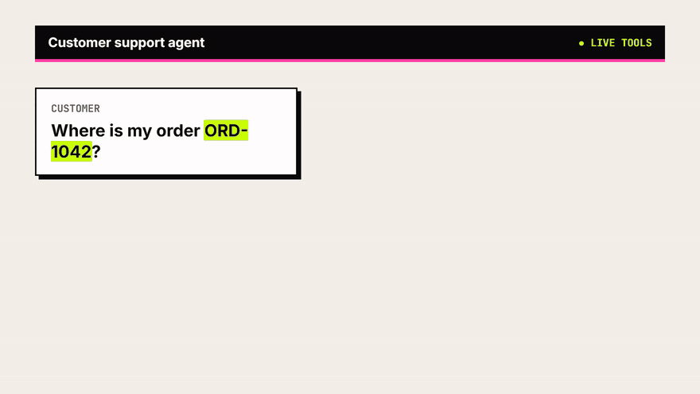

Plumb[check]
Test the work. Trust the agent.
Local regression tests for what your AI agent does: catch a wrong tool argument, an unapproved send, a forbidden operation or a wrong final answer before the agent touches real systems.

Try it
npx plumbcheck demo
Needs Node.js 22+. The demo fails on purpose and writes the same kind of report you can open above. Add it to a project with npm install --save-dev plumbcheck, or install the Windows app, which needs no Node.js.
What you get
- Windows app: build a first test with a form, save projects, run offline fixture checks or let a real model (OpenAI, Anthropic, Ollama and other servers you configure) choose the tools, then keep the run history and compare runs.
- Command line and CI:
plumbcheck run suite.jsonwrites HTML, JSON and JUnit reports and exits 1 on a regression. - Test your own agent: JavaScript and Python adapters, and an MCP fixture server any MCP client can connect to. Tool calls are replayed from fixtures, so nothing real is touched.
- Contracts: allow, deny and approval policies, argument matchers, call order and final-answer checks, with a JSON Schema for editor support.
- Experimental: an Android app, a self-hosted snapshot relay and an assistant plugin.
What it catches
ARGUMENT_MISMATCH: the right tool with the wrong value, e.g. the wrong order ID.APPROVAL_REQUIRED: a send or payment the contract says needs approval.DENIED_TOOL: a forbidden operation, even when a tool reply tells the agent to do it.OUTPUT_ASSERTION: a final answer that contradicts the tool results.
Code signing policy
Free code signing provided by SignPath.io, certificate by SignPath Foundation.
- Signed files: the Windows installer and
PlumbCheck.exe, built from the public repository by its release workflow. Nothing built elsewhere is signed. - Roles: author and committer, reviewer, and approver: stepan4002. Every signing request is approved by hand.
- Privacy: no telemetry. Read the privacy policy.
- Uninstall: Settings → Apps → Installed apps → PlumbCheck, or
Uninstall PlumbCheck.exein the install folder. Your projects in%APPDATA%\PlumbCheckare kept until you delete that folder.